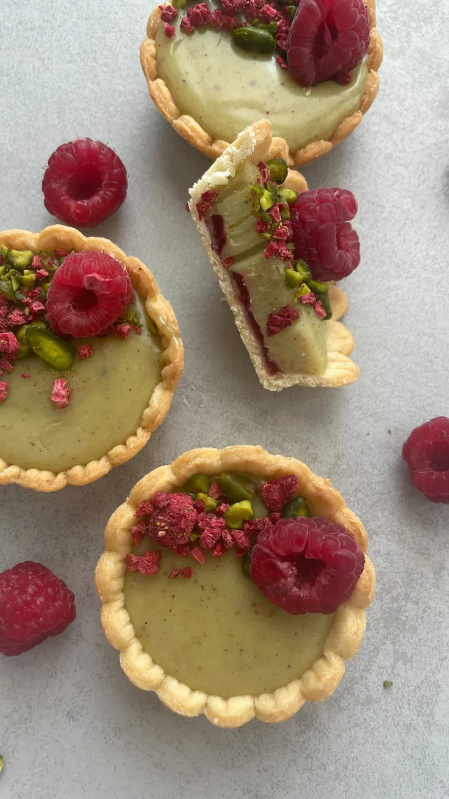
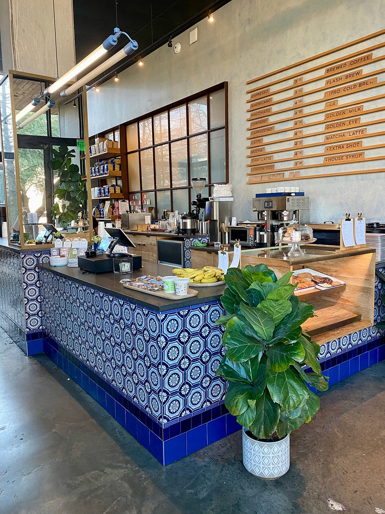
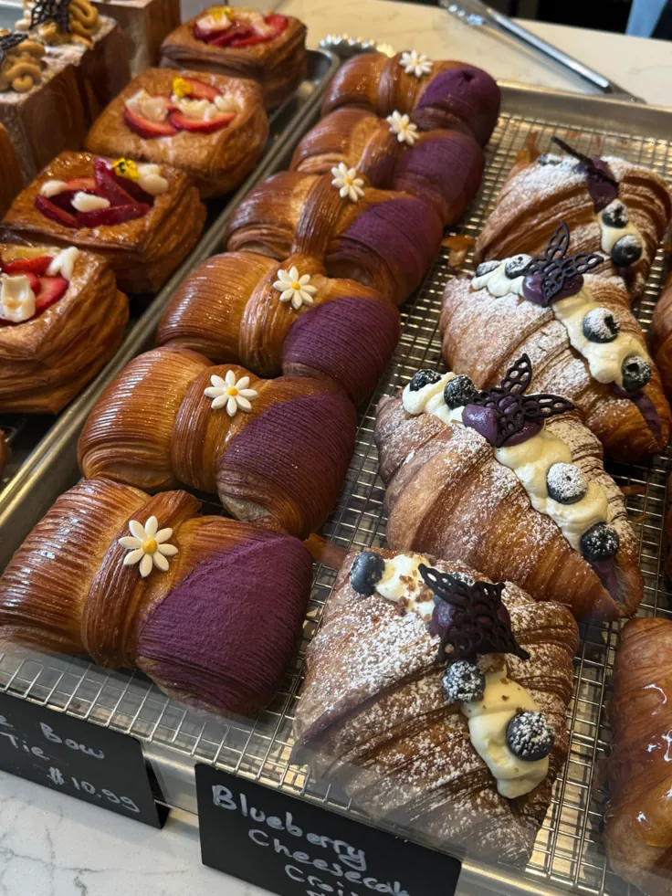
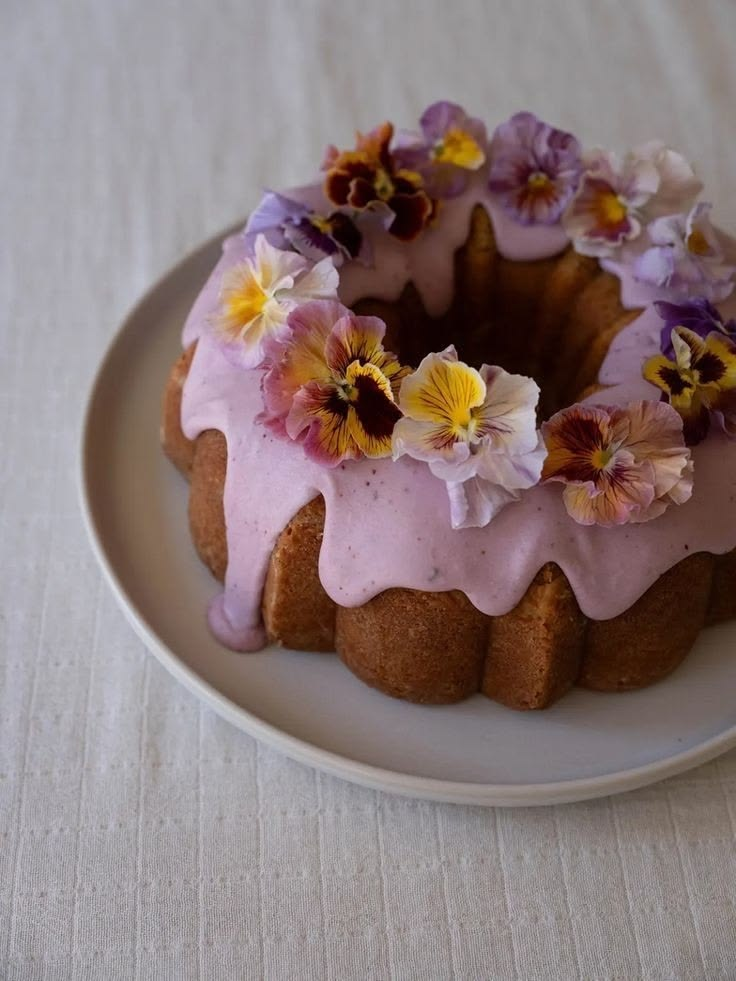
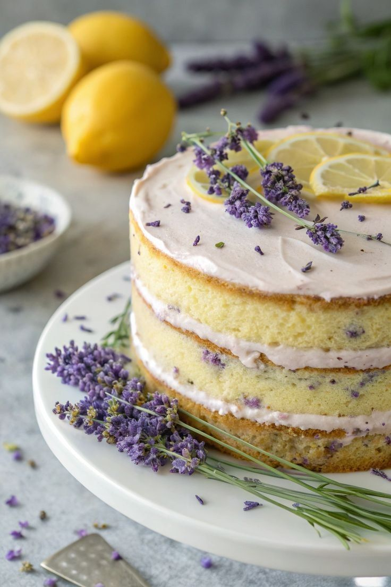
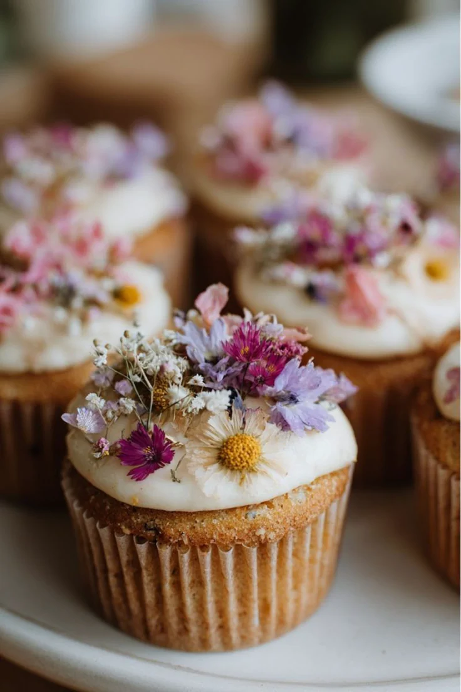
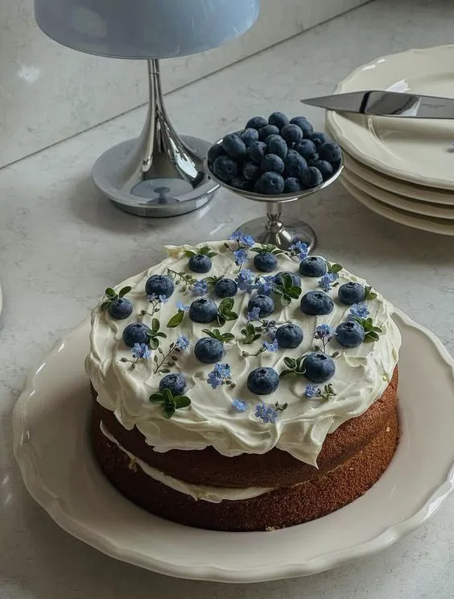

Tartas
Casa de plantas, café y pâtisserie
Un refugio de plantas, café de especialidad y pastelería delicada, pensado para quedarse un rato entre hojas, azulejos y algo dulce.

El local
Entre limoneros, azulejos azules y vitrinas de pastelería, JACINTO se siente como una pausa luminosa: un lugar para elegir plantas, tomar café y llevarse algo recién horneado.
La barra
Una barra para pedir café de especialidad, elegir algo dulce de la vitrina y quedarse entre plantas, luz suave y el azul de los azulejos.

Cafetería y pâtisserie
Tartas de pistacho, croissants rellenos, cakes florales y piezas pequeñas para acompañar café entre plantas.






Vivero boutique
Rarezas rosadas, monsteras variegadas, hojas gráficas y clásicos de bajo mantenimiento.

Luz media brillante

Riego moderado

Sombra luminosa

Humedad alta

Luz indirecta

Ambiente cálido

Luz filtrada

Exterior luminoso

Luz brillante

Riego espaciado

Fácil cuidado

Bajo mantenimiento

Interior noble

Humedad media

Luz indirecta

Sol suave
Visita
Martes a sábado
11:00 - 19:30
Vicente López, Buenos Aires
Café, pâtisserie y asesoría verde